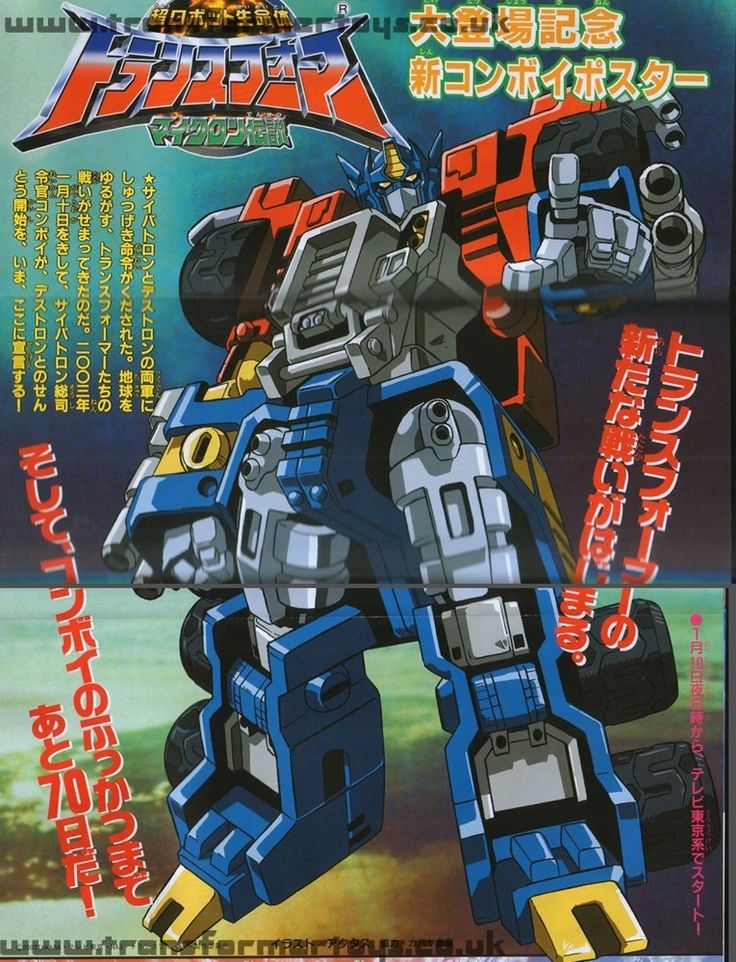

Optimus Prime fue originalmente un juguete japonés
Antes de convertirse en el icónico líder de los Autobots, Optimus Prime era simplemente un juguete en una línea japonesa llamada Diaclone. En esa serie, los robots no eran personajes, sino vehículos tripulados por humanos miniatura. Fue la empresa Hasbro, en colaboración con Takara, quien adquirió los derechos de estas figuras y las reimaginó con personalidad y trasfondo narrativo para el mercado occidental.
El rediseño de Optimus incluyó no solo su nombre —antes conocido como "Battle Convoy"— sino también una historia heroica. Pasó de ser un simple camión de juguete a un símbolo de liderazgo, sacrificio y valentía. Su transformación de vehículo a robot reflejaba la dualidad entre lo cotidiano y lo extraordinario, algo que fascinó a millones de niños.
Con una voz poderosa, una actitud noble y un firme código de honor, Optimus Prime se volvió el corazón emocional de la franquicia. Desde entonces ha sido una figura paterna para los Autobots y un emblema de resistencia contra la tiranía de los Decepticons. Su origen como juguete muestra cómo algo aparentemente simple puede convertirse en una leyenda global.
← Volver a curiosidades de Transformers